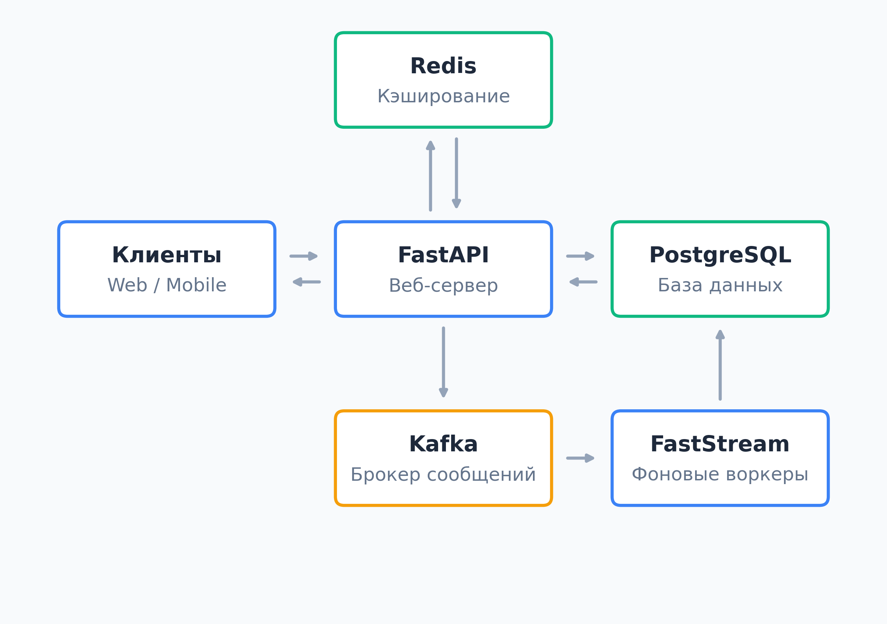

Высоконагруженные системы на Python
В рамках данной темы изучаются принципы построения отказоустойчивых и масштабируемых микросервисов, способных обрабатывать большое количество запросов. Основной упор делается на использование современного асинхронного стека Python. Проектирование таких систем требует грамотного разделения ответственности между веб-серверами, базами данных, системами кэширования и брокерами сообщений, что позволяет достичь высокой производительности и надежности конечного продукта.
Ключевые технологии и компоненты
- FastAPI: Современный и высокопроизводительный веб-фреймворк для создания асинхронных REST API.
- FastStream: Мощный фреймворк для удобной работы с потоками данных и асинхронного взаимодействия с брокерами сообщений.
- SQLAlchemy: Продвинутая ORM-библиотека для безопасного и структурированного взаимодействия приложения с реляционными базами данных.
- PostgreSQL: Надежная объектно-реляционная СУБД, выступающая в качестве основного хранилища информации в системе.
- Redis: Сверхбыстрое хранилище структур данных в оперативной памяти (in-memory), которое применяется для кэширования и снижения нагрузки на основную базу данных.
- Kafka: Распределенная платформа потоковой передачи событий, обеспечивающая надежный обмен сообщениями между различными микросервисами при колоссальных нагрузках.
Схема
